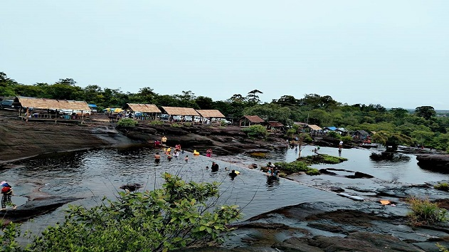
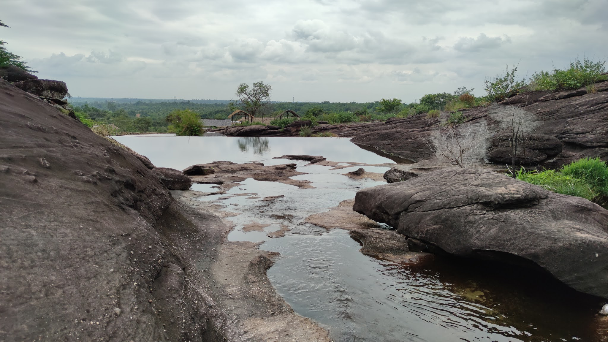
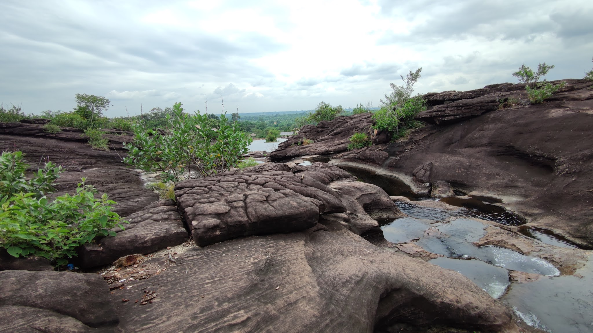

ຕາດຫ້ວຍຊາຍຂາວ
ສະຖານທີ່ທ່ອງທ່ຽວທຳມະຊາດ ແລະ ວັດທະນະທຳໃນນະຄອນຫລວງກໍ່ມີຫລາຍບ່ອນ, ແຕ່ຫາກທ່ານຢາກໄປທ່ຽວກິນອາກາດແບບສົດໆເຂດຊານ ເມືອງໃນວັນພັກຂໍແນະນຳສະ ຖານທີ່ເຫມາະສົມທີ່ສຸດໃນຍາມຝົນເຊັ່ນນີ້ກໍ່ແມ່ນຕາດຫ້ວຍຊາຍຂາວ ເປັນສະຖານທີ່ທ່ອງທ່ຽວທີ່ສຳຄັນທາງທຳມະຊາດອີກບ່ອນຫນຶ່ງຢູ່ໃນເຂດບ້ານນາຄາຍ ເມືອງໄຊທານີນະຄອນຫລວງ ເຮົານີ້ເອງ, ເປັນສະຖານທີ່ພວມໄດ້ຮັບການພັດທະນາ, ປົວແປງໃຫ້ເປັນສະຖານທີ່ພັກຜ່ອນຢ່ອນໃຈຂອງນັກທ່ອງທ່ຽວທັງພາຍໃນ ແລະ ຕ່າງປະເທດ, ແຕ່ມັນເປັນສະຖານທີ່ໃຫມ່ຍັງບໍ່ທັນເປັນທີ່ຮູ້ຈັກພໍປານໃດ.
ຕາດຊາຍຂາວເປັນຕາດທີ່ມີລັກສະນະເນີນກະແສນ້ຳໄຫລ ຕາມພະລານຫີນບໍ່ແຮງປານໃດໃນລະດູແລ້ງ ທ່ານສາມາດລົງຫລິ້ນນ້ຳໄດ້ຢ່າງສະບາຍ ແຕ່ກໍ່ຕ້ອງລະວັງເພາະໄຄຫີນອາດ ເຮັດໃຫ້ທ່ານພະລາດມື່ນກໍ່ເປັນ ໄດ້ນ້ຳໄຫລຈຸ້ມກັນເປັນບາງບ່ອນກະທົບໃສ່ຫີນເປັນອາຍບວກກັບລົມພັດຜ່ານມາເປັນໄລຍະເຮັດໃຫ້ທ່ານຮູ້ສຶກເຢັນສະບາຍໃນຍາມຮ້ອນ, ສ່ວນຍາມຝົນຈະໄຫລແຮງ ແລະ ໄວເປັນພິເສດເພາະມັນເປັນຄ້ອຍລົງ, ສາຍນ້ຳຍູທ່າງຖີບຕົວ ແລະ ເພີ່ມຄວາມໄວຂຶ້ນຢ່າງແຮງ, ແຕ່ກໍ່ມີໂງ່ນຫີນຫລາຍຫນ່ວຍທີ່ທ່ານສາມາດນັ່ງຊົມໃກ້ໆກັບມັນໄດ້ຕາມ ສະບາຍ, ບາງຄັ້ງທ່ານອາດຈະເຫັນຫມູ່ປາທີ່ມີຟຸ່ມເຟືອຍຫລາຍບ່ອນເຫມາະສຳລັບທີ່ຢູ່ອາໄສຂອງມັນສະຖານທີ່ແຫ່ງນີ້ ພວມໄດ້ຮັບການພັດທະນາຂອງພະແນກການທີ່ກ່ຽວຂ້ອງຮ່ວມກັບການປົກປັກຮັກສາສິ່ງແວດລ້ອມຂອງຊາວບ້ານໃນເຂດນັ້ນນັບວ່າເປັນໂສມຫນ້າໃຫມ່ທີ່ເຮັດໃຫ້ຜູ້ຄົນເລີ່ມຮູ້ຈັກກັບສະຖານທີ່ແຫ່ງນີ້ຫລາຍຂຶ້ນ.
ນັກທ່ອງທ່ຽວ ແລະຜູ້ຄົນສ່ວນຫລາຍຈະໃຫ້ຄວາມສົນໃຈເປັນພິເສດໃນທຸກໆຍາມຫລາຍກວ່າຫມູ່ກໍ່ແມ່ນຍາມບຸນປະເພນີທາງສາສະຫນາ, ບຸນສຳຄັນຂອງຊາດເຊັ່ນ: ບຸນອອກພັນສາ, ບຸນປີໃຫມ່ ແລະ ອື່ນໆ ຜູ້ຄົນເປັນຈຳນວນຫລວງຫລາຍຈະມາຫລິ້ນໃນຕາດແຫ່ງນີ້ສ່ວນໃຫຍ່ແມ່ນຖືອຸປະກອນຮັບໃຊ້ເຂົ້າໃນການເດີນປ່າ, ຫລິ້ນນ້ຳຈົນກະທັ້ງຮອດປູສາດກິນເຂົ້າສາມັກຄີ ຕາມຮົ່ມໄມ້, ພະລານຫີນຟາກເບື້ອງເທິງໃນແຄມປ່າເພາະຈະມີຫຍ້າແຝດ, ກົກສາມສາເປັນຮົ່ມໃຫ້ທ່ານພັກຜ່ອນໄດ້ຢ່າງສະບາຍ, ຕົ້ນໄມ້ຫລາຍຊະນິດຢືນລຽນກັນລ້າຍຊ້າຍຄືກັນກັບທະ ຫານຍາມເຝົ້າຕາດນີ້ແຫລະ! ຖ້າຫາກທ່ານໄດ້ໄປສະຖານທີ່ແຫ່ງນີ້ໃນຕອນກັບກໍ່ມາແວ່ວັດພະບາດແອວຂັນອີກນັບວ່າເປັນການທ່ຽວທີ່ກຸ້ມຄ່າ.
ພິເສດສຸດກໍ່ແມ່ນວັນພັກເສົາອາທິດໃນຍາມໃດກໍ່ແລ້ວ ແຕ່ສະຖານທີ່ແຫ່ງນີ້ແມ່ນເຫມາະສົມທີ່ສຸດໃນການພັກຜ່ອນນ້ຳດັ່ງກ່າວສືບເນື່ອງມາຈາກສາຍພູຜ່ານພູເຂົາຄວາຍລົງມາຫາບ້ານ ນາຄາຍ ເມືອງໄຊທານີ, ສະຖານທີ່ດັ່ງກ່າວແມ່ນເດີນທາງຕາມວັດພະບາດແອວຂັນເຊິ່ງຫ່າງຈາກເສັ້ນທາງເລກທີ 13 ໃຕ້ລ້ຽວຊ້າຍເຂົ້າໄປທາງທ່າງ່ອນປະມານ 10 ກວ່າກິໂລແມັດເປັນ ເສັ້ນທາງດິນແດງທີ່ຍັງບໍ່ທັນໄດ້ຮັບການບຸລະນະເທື່ອ.


